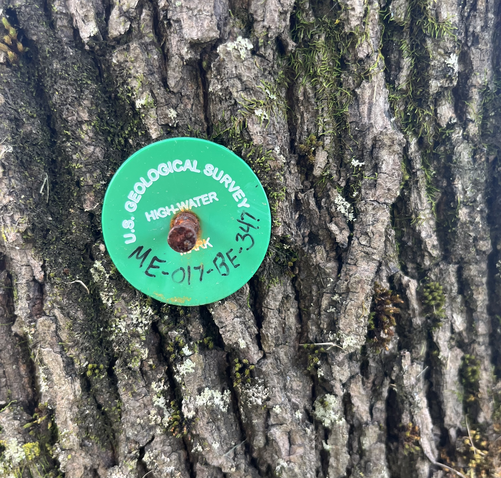
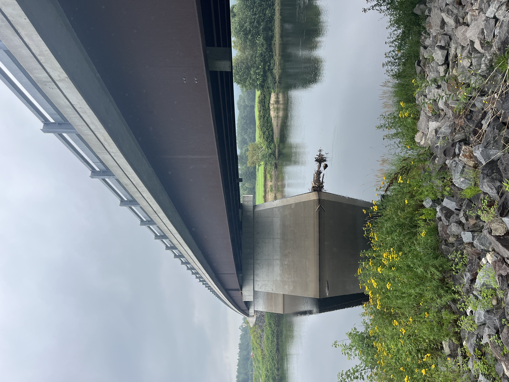
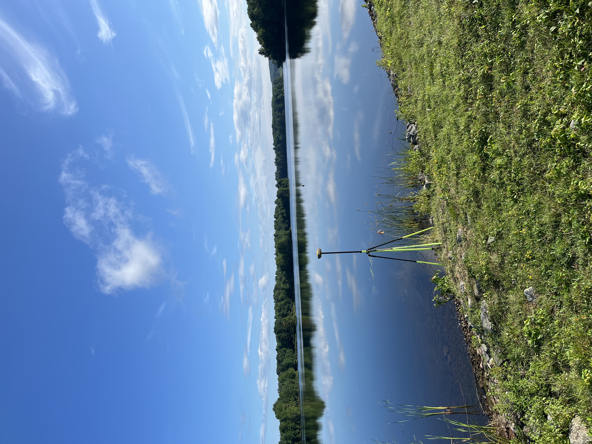

U.S. Geological Survey: Data Analytics and Visualization Intern (Summer 2024)
Flood Damage Modeling – Python
Flood Mapping – ArcGIS
Fieldwork – High Water Mark Surveying
To gain more exposure to fieldwork, I assisted with a surveying project for a few days.
The Hydrologic Technician and I visited several high water marks from [flood ?] in December 2023. [Facts about flood (unusual, damaging)].
During the flood event, USGS technicians were able to go out and place high water marks for later surveying, designating the spatial extent and [rise] of the flood.
We located the markers (tokens attached to trees, small flags planted, etc.) and set up a high powered GPS to triangulate the markers' precise locations and elevations.
The project was contracted by FEMA, and they would go on to use the data to precisely map the flood and finalize their reporting on the storm event with much more accurate [data].
It was nice to get out of the office for a bit and explore the local nature from a new perspective.
- I learned a lot about:
- • Federal practices in data collection
- • Field instrument engineering, deployment, and maintenance
- • Project process: from field work, data cleaning and processing, analysis and experimentation, writeups, to local and federal action and change




About:
"Created by an act of Congress in 1879, the USGS provides science for a changing world,
which reflects and responds to society’s continuously evolving needs. As the science arm of the Department of the Interior,
the USGS brings an array of earth, water, biological, and mapping data and expertise to bear in support of decision-making on
environmental, resource, and public safety issues."
- • Our Vision: Lead the Nation in 21st-century integrated research, assessments, and prediction of natural resources and processes to
meet society’s needs.
- • Our Mission: The USGS monitors, analyzes, and predicts current and evolving Earth-system interactions and delivers actionable
information at scales and timeframes relevant to decision makers.
- • What We Do: The USGS is a primary Federal source of science-based information on ecosystems, land use, energy and mineral resources,
natural hazards, water use and availability, and updated maps and images of the Earth’s features available to the public.
New England Water Science Center:
The USGS owns and operates several regional Water Science Centers across the country.
The New England Water Science Center serves Maine, Massachusetts, New Hampshire, Vermont, and Connecticuit,
providng information on the area's water resources to Federal, State, Tribal, and local stakeholders.
Their goal, according to their website, is to use data to "help safeguard human and wildlife health, public safety, and environmental sustainability."
I was stationed in their Augusta, Maine office.